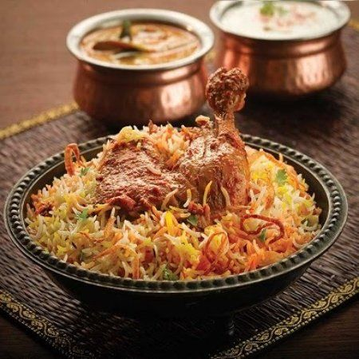
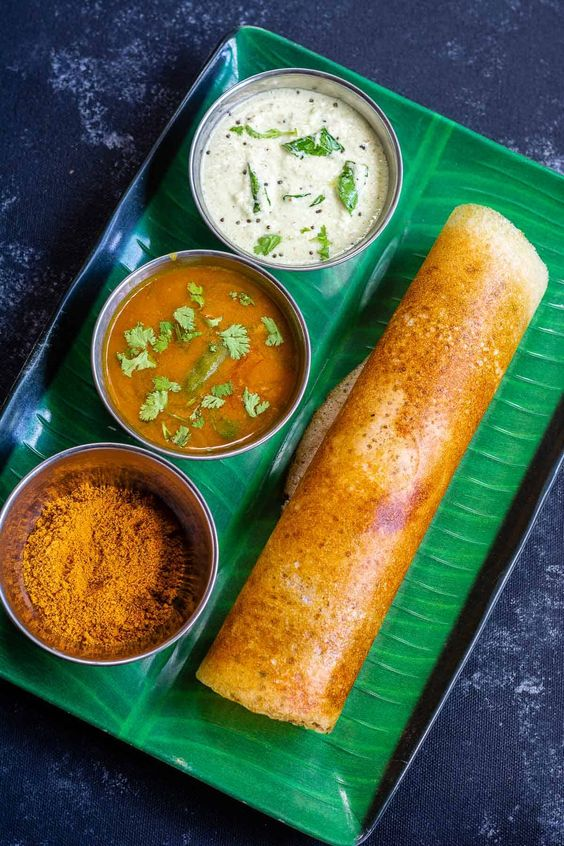
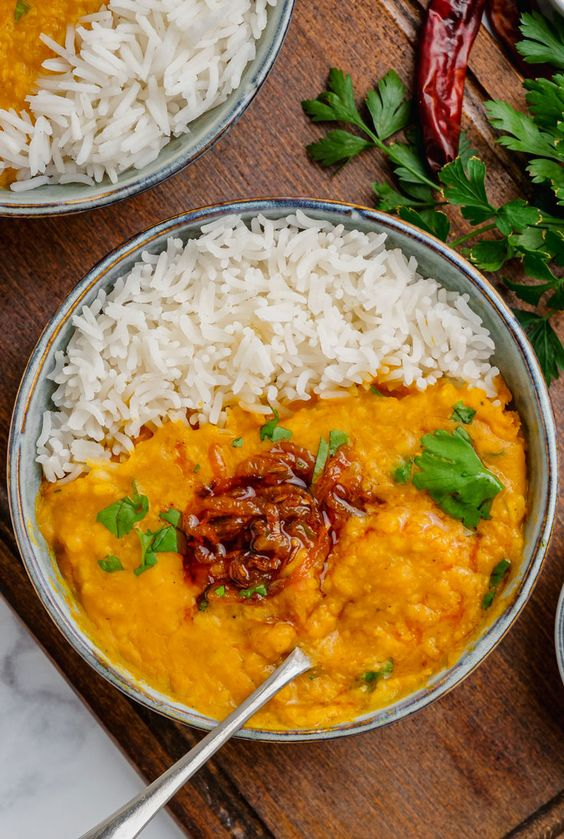
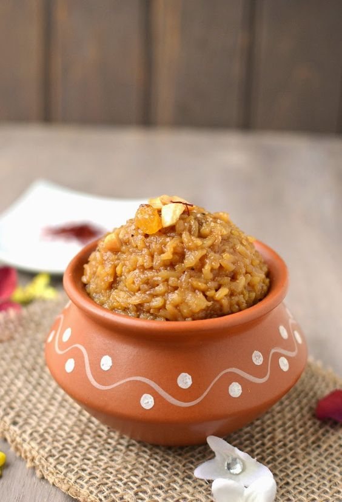
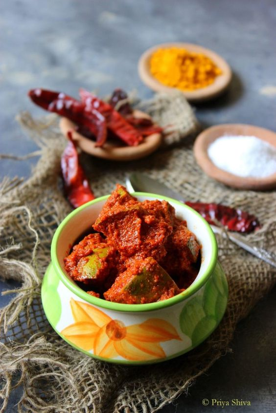

On a hard day, when I miss home, I crave something that brings home a tad bit closer to me. I can’t really hop on a 2k flight every time I miss home, so I turn to the kitchen instead and do my best to replicate my mom’s cooking. Indian food is characterized by its diverse and vibrant culinary traditions, varying significantly across the regions of India. In my completely biased opinion, South-Indian food takes a niche spot with its bold and intricate use of a wide array of spices and flavors and a generous use of local ingredients to create rich and flavorful dishes. South Indian comfort food offers a satisfying and soulful culinary experience. My top 5 go-to's are listed below:
Biryani
Biryani is a rich and aromatic rice dish that is a staple in Indian cuisine. It features layered rice infused with a blend of spices, and it includes meat (like chicken, lamb, or beef) or vegetables. Traditionally, it is garnished with fried onions, raisins, and boiled eggs. It is renowned for its complex flavors, vibrant colors, and aromatic spices.
Ingredients:
- For the Rice:
- Basmati rice – 2 cups
- Bay leaves – 2
- Whole spices (cloves, cardamom, and cinnamon sticks) – 2 each
- For the Meat/Marinade:
- Chicken or lamb – 500g (cut into pieces)
- Yogurt – 1 cup
- Ginger-garlic paste – 2 tbsp
- Red chili powder – 1 tbsp
- Turmeric powder – ½ tsp
- For the Gravy:
- Onions – 2 (thinly sliced)
- Tomatoes – 2 (chopped)
- Green chilies – 2 (slit)
- Fresh coriander leaves – a handful (chopped)
- Fresh mint leaves – a handful (chopped)
- Ghee or vegetable oil – for frying
- Saffron strands – a pinch (soaked in 2 tbsp of milk)
- For Garnishing:
- Boiled eggs – 2
- Fried onions – a handful
- Raisins and cashews – a handful
Recipe:
- Prepare the Rice:
- Wash the rice thoroughly and soak it for 30 minutes.
- In a large pot of boiling water, add the rice, bay leaves, and whole spices.
- Cook until the rice is 70-80% cooked. Drain and set aside.
- Marinate the Meat:
- In a bowl, combine the meat with yogurt, ginger-garlic paste, red chili powder, and turmeric powder.
- Let it marinate for at least 2 hours, preferably overnight.
- Prepare the Gravy:
- In a deep pan, heat the oil or ghee over medium heat.
- Add the sliced onions and fry until golden brown. Remove half for garnishing.
- Add the green chilies and tomatoes to the remaining onions in the pan and cook until soft.
- Add the marinated meat and cook on a medium flame until the meat is tender and cooked through.
- Assemble the Biryani:
- In a large pot, layer half of the cooked rice.
- Add a layer of the meat mixture, followed by a sprinkle of fresh mint and coriander leaves.
- Add the remaining rice on top, and pour the saffron milk over it.
- Garnish with fried onions, raisins, and cashews.
- Cover the pot with a tight-fitting lid, and cook on a low flame for 20-30 minutes, until the rice is fully cooked and fluffy.
- Serve:
- Serve the biryani in a large serving dish, garnished with boiled eggs.
- Serve with raita (yogurt with herbs) and a hard-boiled egg.
Advisory Information
- Marination Time: The longer you marinate the meat, the more flavorful it will be.
- Rice Cooking: Be careful not to overcook the rice during the initial cooking phase; it should only be 70-80% cooked as it will cook further when assembling the biryani.
- Layering: Ensure to create distinct layers while assembling the biryani to get the perfect blend of flavors in every bite.
- Garnish: Customize your garnish with your preferred nuts and herbs to add a personal touch to your biryani.
- Serving: Biryani is best served with raita or a simple salad to balance the rich flavors of the dish.
Dosa
Dosa is a South Indian staple often enjoyed for breakfast or dinner. It is a crispy, thin pancake made from a fermented batter of rice and urad dal (black gram). Traditionally paired with coconut chutney, sambar, or a variety of spicy and tangy condiments, it is known for its simple yet fulfilling and aromatic flavors.
Ingredients:
- For the Dosa Batter:
- Rice – 2 cups
- Urad dal (skinless black gram) – 1 cup
- Fenugreek seeds – 1 tsp
- Salt – to taste
- Water – as required
- For Serving:
- Sambar – a South Indian style spicy and tangy vegetable stew
- Coconut chutney – a creamy condiment made with grated coconut, green chilies, and a tempering of mustard seeds and curry leaves
- Potato Masala (for Masala Dosa) – a spicy potato filling made with boiled potatoes, onions, and spices
Recipe:
- Prepare the Batter:
- Rinse the rice and urad dal separately in water multiple times and soak them separately along with fenugreek seeds for 4-5 hours.
- Drain the water and grind the urad dal and rice separately into smooth pastes, using some water as necessary to facilitate grinding.
- Mix the ground rice and urad dal together in a large bowl, add salt to taste, and mix well.
- Cover and let it ferment in a warm place for 8-10 hours or overnight until the batter rises and turns bubbly.
- Make the Dosa:
- Stir the fermented batter well. If it is too thick, add a little water to achieve a pouring consistency.
- Heat a non-stick or cast-iron dosa griddle on medium-high heat.
- Lightly grease the griddle with oil using a piece of onion or a brush.
- Pour a ladle of batter in the center of the griddle and quickly spread it out in a circular motion using the back of the ladle to form a thin pancake.
- Drizzle a few drops of oil around the edges of the dosa.
- Cook on medium heat until the bottom turns golden and crispy, and the top looks set.
- Flip the dosa and cook the other side for a few seconds (if desired, usually one side is cooked for crispy dosa).
- (For masala dosa, place a generous amount of potato masala in the center of the dosa before folding it.)
- Fold the dosa in half or roll it up and remove it from the griddle.
- Serve
- Serve hot, accompanied by sambar and coconut chutney.
Advisory Information
- Fermentation: The fermentation time can vary depending on the climate; it may take longer in colder climates. Finding a warm spot for fermentation is key.
- Batter Consistency: The batter should be of pouring consistency but not too thin. It should coat the back of a spoon evenly.
- Cooking: Cook dosa on a medium-hot griddle to ensure even cooking and a crispy texture. The griddle should be hot enough that a few drops of water sizzle and evaporate quickly when sprinkled on it.
- Serving: Serve dosa immediately after making to enjoy its crispy texture. It is traditionally served with various chutneys and sambar, offering a delightful combination of crispy, spicy, and tangy flavors.
- Variations: There are many variations of dosa, including masala dosa (filled with spicy potato masala), rava dosa (made with semolina), and many others. Experiment with different fillings and batter compositions to find your favorite!
Pappu Annam (Dal Rice)
"Pappu Annam" is a traditional South Indian dish, essentially a combination of rice and dal (lentils), which is both nourishing and comforting. It is a straightforward dish to prepare, using basic ingredients yet offering a wholesome meal, rich in proteins and fiber. It is generally paired with a variety of pickles, papad, or a simple vegetable stir-fry.
Ingredients:
- For the Pappu Annam:
- Rice – 1 cup
- Toor dal (pigeon peas) – ½ cup
- Turmeric powder – ½ tsp
- Water – as required
- For the Tempering:
- Ghee or oil – 2 tbsp
- Mustard seeds – ½ tsp
- Cumin seeds – ½ tsp
- Dry red chilies – 2
- Asafoetida (hing) – a pinch
- Curry leaves – a few
- Garlic cloves – 2-3 (crushed, optional)
- Onion – 1 (finely chopped, optional)
- Salt – to taste
- Fresh Coriander Leaves - for garnish (Optional)
Recipe:
- Prepare the Rice and Dal:
- Wash the rice and toor dal together until the water runs clear.
- In a pressure cooker or a deep pot, add the washed rice and dal, turmeric powder, and sufficient water (approximately 4 cups).
- Cook until both the rice and dal are soft and mushy. If using a pressure cooker, it generally takes 3-4 whistles on medium heat.
- Prepare the Tempering:
- In a separate pan, heat the ghee or oil over medium heat.
- Add the mustard seeds and let them splutter.
- Add the cumin seeds, dry red chilies, asafoetida, and curry leaves, and sauté for a few seconds.
- Add the crushed garlic and chopped onions if using, and sauté until the onions turn translucent and the garlic is golden.
- Add the tempering to the cooked rice-dal mixture, and mix well.
- Add salt to taste, and mix again to combine all the ingredients well.
- Serve
- Transfer the Pappu Annam to a serving dish.
- Garnish with fresh coriander leaves.
- Serve hot, accompanied by a pickle, papad, or a simple vegetable stir-fry.
Advisory Information
- Consistency: The consistency of Pappu Annam can be adjusted as per personal preference. Some prefer it slightly runny, while others like it more thick and mushy.
- Variations: You can add a variety of vegetables like tomatoes, spinach, or drumsticks to the Pappu Annam to enhance its nutrition and flavor.
- Serving: Pappu Annam is generally served with a dollop of ghee on top, which elevates the flavor significantly.
- Pairing: This dish pairs wonderfully with simple accompaniments like pickles, yogurt, or a dry vegetable curry.
- Spice Level: Adjust the level of spices according to your taste preference. If you prefer a spicier version, you can add green chilies or increase the number of dry red chilies.
Annam Paramannam
"Annam Paramannam" is a traditional South Indian dessert made primarily from rice and milk, sweetened with jaggery or sugar. This rice pudding is flavored with cardamom and often garnished with fried cashews and raisins. It is a staple in festive occasions and religious ceremonies, embodying the richness of Indian culinary traditions in a sweet dish.
Ingredients:
- For the Annam Paramannam:
- Rice – ½ cup
- Milk – 1 litre
- Jaggery or sugar – ¾ to 1 cup (adjust according to your taste preference)
- Cardamom powder – ½ tsp
- For the Garnish:
- Ghee – 2 tbsp
- Cashews – a handful
- Raisins – a handful
Recipe:
- Prepare the Rice:
- Wash the rice thoroughly and soak it for 30 minutes to 1 hour.
- Drain the water and set aside.
- Cook the Rice:
- In a deep, heavy-bottomed pot, bring the milk to a boil.
- Add the soaked and drained rice to the boiling milk, stirring constantly to prevent it from sticking to the bottom.
- Cook on a low to medium flame until the rice is soft and the milk has reduced to almost half its original volume.
- Add the Sweetener:
- Add the jaggery or sugar to the rice and milk mixture, stirring continuously until it is completely dissolved.
- Cook for another 10-15 minutes on a low flame, allowing the mixture to thicken.
- Stir in the cardamom powder and remove from heat.
- Prepre the Garnish:
- In a small pan, heat the ghee over medium heat.
- Add the cashews and fry until golden brown, then add the raisins and fry until they puff up.
- Add the fried cashews and raisins to the Annam Paramannam and mix well.
- Serve
- Serve the Annam Paramannam warm or chilled, depending on your preference.
- It can be garnished with additional fried nuts or even saffron strands for a more luxurious touch.
Advisory Information
- Sweetener: The amount of sweetener can be adjusted according to personal preference. Jaggery gives a rich and distinct flavor compared to sugar.
- Consistency: The pudding will thicken as it cools, so remove it from heat at a slightly thinner consistency than you desire.
- Cooking: Ensure to stir the mixture constantly while cooking to prevent it from sticking to the bottom and forming lumps.
- Serving: Annam Paramannam can be served either warm or cold. It tends to thicken further upon cooling, so you might need to adjust the consistency with a little milk before serving.
- Variations: You can add other flavorings like saffron or rose water for a different flavor profile.
Aavakayi Pacchadi
Avakayi Pacchadi is a traditional Andhra style pickle made using raw mangoes. It is renowned for its fiery spiciness, combined with the tartness of raw mangoes, and enhanced with a variety of spices. This pickle, with its bold and robust flavors, is a staple in many South Indian households, accompanying a wide range of dishes and adding a zesty touch to the meal.
Ingredients:
- For Avakayi Pacchadi:
- Raw Mangoes – 5-6 (medium size, washed, and cut into uniform pieces)
- Mustard Seeds Powder – ¼ cup
- Red Chilli Powder – ¼ cup (adjust as per your spice preference)
- Fenugreek Seeds – 2 tsp
- Fenugreek Seeds Powder – 1 tsp
- Salt – ¼ cup (adjust to taste)
- Garlic Cloves – 10-15 (peeled)
- Sesame Oil – 1 cup
- Turmeric Powder – 2 tsp
Recipe:
- Preparation:
- Dry roast the fenugreek seeds until they turn slightly reddish. Let it cool and grind to a fine powder.
- Wash and dry the mangoes thoroughly. Cut them into uniform pieces, retaining the kernel.
- Mixing the Ingredients:
- In a large mixing bowl, add the mango pieces and add salt, turmeric powder, and mix well.
- Add red chili powder, mustard powder, fenugreek powder, and asafoetida.
- Mix everything well to ensure the mango pieces are well coated with the spices.
- Adding Oil, Ginger-garlic:
- Heat the sesame oil until it is slightly warm. Allow it to cool to room temperature.
- Add the oil to the spiced mango pieces, ensuring all the pieces are submerged in oil.
- Add the peeled garlic cloves to the mixture and give it a good stir.
- Jar the Pickle:
- Transfer the mixture into a clean, dry, and sterilized glass jar or a ceramic jar.
- Ensure there is no moisture in the jar, utensils, or any of the ingredients used as moisture can spoil the pickle.
- Seal the jar tightly and set it aside in a cool, dark place for 3-4 days, shaking it once a day to mix it well.
- Serve
- After 3-4 days, the Avakayi Pacchadi will be ready to be served.
- Serve it as a side dish with rice, dosa, or any South Indian meal.
Advisory Information
- Spices: The spice levels can be adjusted as per your taste preference, but traditionally, this pickle is quite spicy.
- Oil: Ensure to use good quality sesame oil, as it gives a unique flavor to the pickle.
- Storage: This pickle can be stored for a long period (a year or more) if handled with clean, dry utensils and stored in a cool and dry place.
- Serving: Avakayi Pacchadi pairs wonderfully with a simple rice and ghee dish, enhancing the meal with its spicy and tangy flavors.